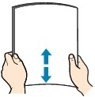

Loading Paper in the Cassette
Loading Paper in the CassetteYou can load only A4, B5, A5, or Letter-sized plain paper in the Cassette.
Load other sizes or types of paper in the Rear Tray.
 Note NoteAdvice for printing on plain paper
For details on the Canon genuine paper, see Media Types You Can Use.
For the page size and paper weight you can use for this machine, see Media Types You Can Use. |
Prepare paper.
Align the edges of paper. If paper is curled, flatten it.

| Note
For details on how to flatten curled paper, refer to "Troubleshooting" in the on-screen manual: Advanced Guide. |
Load paper.
(1) Pull out the Cassette from the machine.
(2) Slide the Paper Guide (A) to align with the mark of page size.
The Paper Guide (A) will stop when it aligns with the corresponding page size mark.
(3) Load the paper stack WITH THE PRINT SIDE FACING DOWN and THE LEADING EDGE TO THE FAR SIDE, and align it against the right side of the Cassette.
| Note
|
(4) Slide the Paper Guide (B) on the left to align completely with the side of the paper stack.
| Note
|
(5) Insert the Cassette into the machine.
Push the Cassette all the way into the machine.
Open the Paper Output Tray gently.
| Note After loading paper
See Changing the Settings in "Printing Photos Saved on the Memory Card / USB Flash Drive" or Changing the Settings in "Making Copies".
See Printing Documents. |